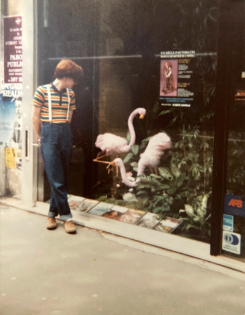
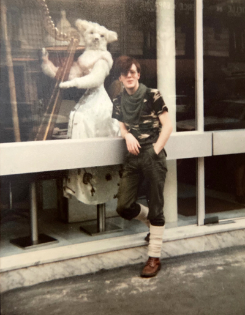
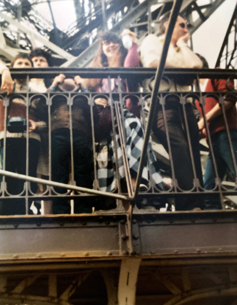
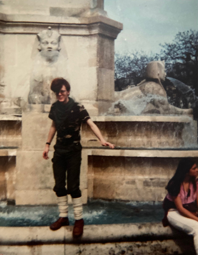
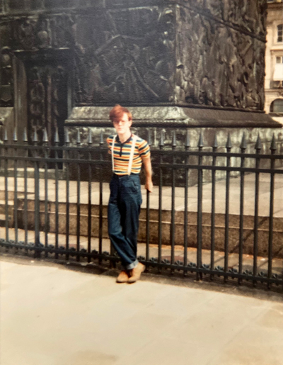
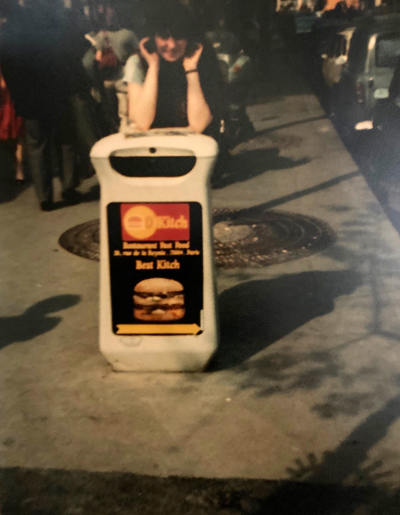

A visit to Paris with my friend Jackie, to see the ballet L'Arlesienne at the Chatelet Theatre (and a tour of the Paris Opéra where we saw Ruggero Raimondi in rehearsal).


Lots of odd Parisian window dressing and the obligatory visit to the Pompidou Centre where, as a non-smoker, I posed in front of Claes Oldenburg's Colossal Ashtray.



